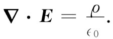

现在，让我们把上述结果同静电学理论结合起来。静电学的基本方程是
 （10.17）
这里ρ指一切 电荷的密度。由于极化电荷不容易被注意，因而把ρ分开成两部分是很方便的。我们再把由非均匀极化所引起的电荷叫作ρ极化 ，而把所有其他的电荷叫作ρ自由 。通常ρ自由 指我们放在导体上面的或是置于空间某些特定位置上的电荷。于是，式（10.17）便变成
或
当然，那个关于E的旋度方程却没有改变：
▽×E=0. （10.19）
由式（10.8）取P，我们便得到一个较简单的方程：
这些就是当有电介质时的静电学方程组。当然，它们并没有陈述任何新的东西，但对于其中ρ自由 为已知、而极化强度P又是正比于E的那些情况，则在计算上它们仍不失为较方便的一种形式。
请注意！我们并没有把介电“常量”κ提到散度之外。那是因为它不一定会处处相同。如果它的值处处相同，则可以把它提出来，因而方程组就不过是那些用κ来除电荷密度ρ自由 的静电方程组了。我们所给出的那种形式的方程组仍适用于一般情况，即场中不同地点可能存在不同的电介质。这样，该方程组就可能很不容易求解了。
有一件具有某种历史重要性的事情应在这里提出。在电学的早期，对极化的原子机制还未了解，而ρ极化 的存在也未被觉察到。当时ρ自由 被认为是全部电荷密度。为了把麦克斯韦方程组写成一简单形式，一个新的矢量D被定义为E与P的线性组合：
D=∈0 E+P. （10.21）
结果，式（10.18）和（10.19）就曾被写成表面上看来十分简单的形式：
▽·D=ρ自由 ；▽×E=0. （10.22）
人们能否解出这组方程？只有给出了D与E之间关系的第三个方程才能做到。当式（10.8）成立时，这个关系为
D=∈0 （1+χ）E=κ∈0 E. （10.23）
上述方程往往被写成
D=∈E， （10.24）
其中∈仍然是描述材料介电特性的另一个常数。它被称为“电容率”（现在你就明白，为什么在我们方程组中会有∈0 ，它是“真空的电容率”）。显然，
∈=κ∈0 =（1+χ）∈0 . （10.25）
今天我们从另一个观点来看待这些事情，那就是，在真空里方程组较为简单，而倘若在每种情况下我们把一切电荷（不管其来源如何）都表示出来，则该方程组总是正确的。如果为了方便我们将其中某些电荷分离开来，或由于我们不愿意详细讨论将要发生的事态，则可以把方程组改写成任一种可能方便的形式，要是我们乐意的话。
还有一点应该强调，一个像D=∈E的方程是描写物质特性的一种尝试。可是物质非常复杂，而这样一个方程实际上并不正确。例如，若E变得太大，那么D便不再正比于E。对于某些物质来说，甚至在相对弱的电场下这个比例关系就已经破坏了。并且，这比例“常量”还可能依赖于E随时间变化的快慢。因此这一种方程，像胡克定律一样，是一种近似。它不可能是一个深刻而又基本的方程。反之，我们关于E的基本方程组，式（10.17）和（10.19），却代表我们对静电学的最深刻而又最完整的理解。